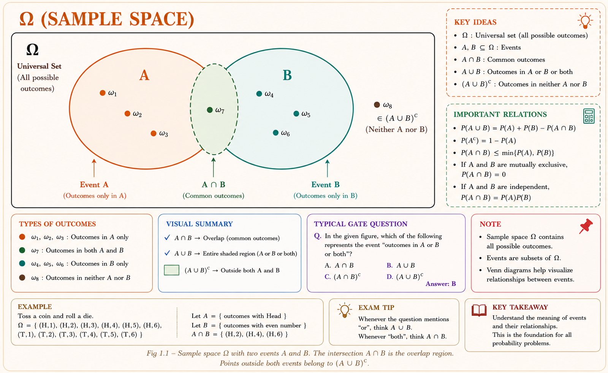
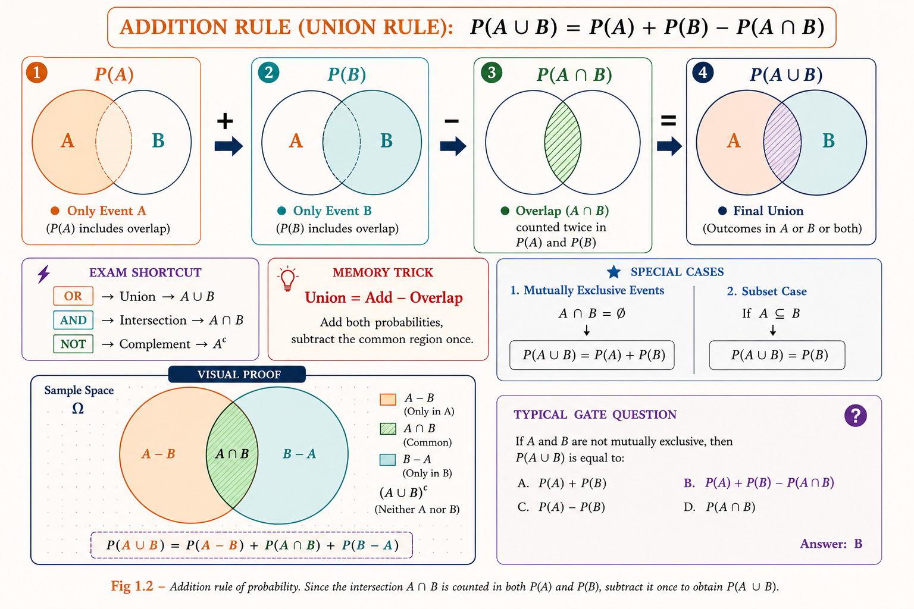
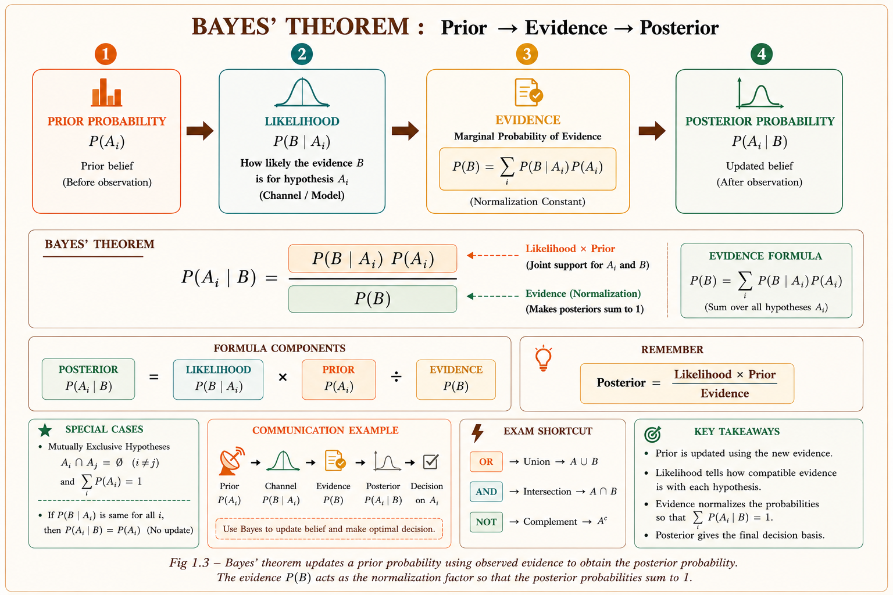
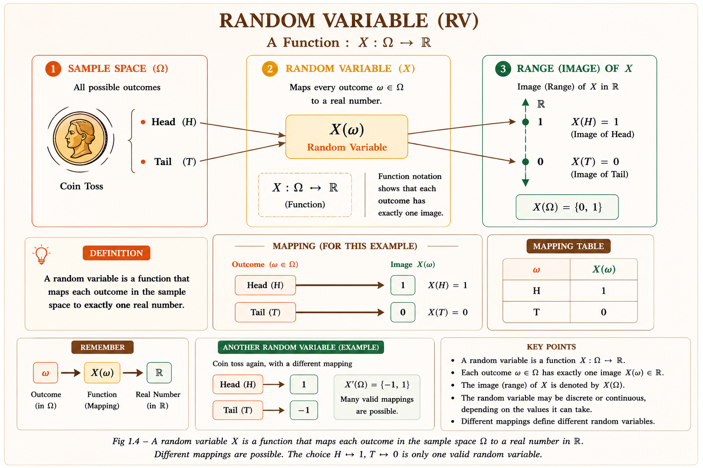
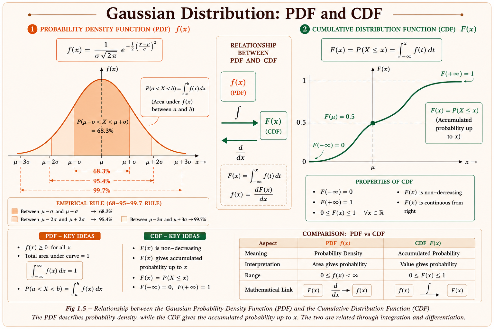
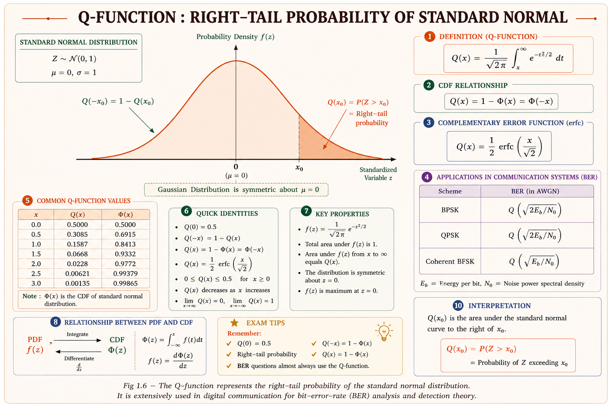

Sample spaces, probability axioms, conditional probability, Bayes' theorem, random variables, PDF, CDF, expectation, moments, and Gaussian random variables — complete GATE/IES foundations with intuition, derivations, diagrams, and solved examples.
Every real-world signal or system is surrounded by uncertainty. Thermal noise in a resistor, fading in a wireless channel, bit errors on an optical fibre, shot noise in a photodetector — none of these can be predicted exactly, yet an engineer must design systems that work reliably in their presence. Probability theory provides the rigorous mathematical language to describe, quantify, and manage this uncertainty.[1]
Probability → Random Variables → Random Processes → Communication System Design. Every chapter in this series builds on this foundation. A weak understanding here means shaky analysis in noise, modulation, detection, and information theory later.
A random experiment is any physical procedure whose outcome cannot be predicted with certainty but whose set of possible outcomes is well-defined. The collection of all possible outcomes is called the sample space \(\Omega\) (also written \(S\)). Any subset of \(\Omega\) is an event.[1]
Tossing a fair coin models binary signalling (0 or 1). Rolling a die models uniform quantisation levels. Randomly selecting a resistor from a batch models component tolerance. The sample space is the complete list of "what could happen."

| Operation | Notation | Meaning | Engineering Example |
|---|---|---|---|
| Union | \(A \cup B\) | A or B or both occur | Received 0 or 1 detected correctly |
| Intersection | \(A \cap B\) | Both A and B occur | Noise and interference both present |
| Complement | \(A^c\) or \(\bar{A}\) | A does not occur | No error in transmission |
| Mutually Exclusive | \(A \cap B = \emptyset\) | Cannot occur together | Bit is 0 and bit is 1 simultaneously — impossible |
| Exhaustive | \(A \cup B = \Omega\) | Together cover all outcomes | Signal is either above or below threshold |
A probability measure \(P\) is a function that assigns a real number to every event in \(\Omega\), satisfying the three axioms laid down by Kolmogorov (1933):[1]
Axiom 1 (Non-negativity): \(P(A) \geq 0\) for every event \(A\).
Axiom 2 (Normalisation): \(P(\Omega) = 1\).
Axiom 3 (Countable Additivity): For mutually exclusive events \(A_1, A_2,
\ldots\),
All other probability rules are derived from these three axioms alone. The key results are:
The addition rule \(P(A \cup B) = P(A)+P(B)\) holds only when \(A\) and \(B\) are mutually exclusive. Forgetting to subtract \(P(A \cap B)\) is one of the most common errors in GATE numericals.

When we are told that event \(B\) has occurred, the sample space effectively shrinks to \(B\). The conditional probability of \(A\) given \(B\) measures how much of \(B\) is also in \(A\):[1]
Let \(B\) = "transmitted bit is 1" and \(A\) = "received bit is 1". Then \(P(A \mid B)\) is the probability of correct detection given a 1 was sent. \(P(A^c \mid B)\) is the probability of error (bit flip). This is central to BER analysis.
Two events \(A\) and \(B\) are statistically independent if knowledge that \(B\) occurred provides no information about whether \(A\) occurred:
If \(A\) and \(B\) are mutually exclusive and \(P(A), P(B) > 0\), they are always dependent. Knowing \(A\) occurred immediately tells us \(B\) did not. GATE repeatedly tests this confusion.
Thomas Bayes (1763) provided the rule to update a prior probability after observing evidence. In communications, this is the backbone of MAP (Maximum A Posteriori) detection and spam filtering.[2]

Posterior ∝ Likelihood × Prior. The denominator is just a normalising constant. In GATE problems, you often need only the numerator to compare hypotheses.
A random variable (RV) \(X\) is a function that maps every outcome \(\omega\) in the sample space \(\Omega\) to a real number: \(X : \Omega \to \mathbb{R}\). Random variables convert abstract outcomes into numbers we can compute with.[3]
Sample space: \(\Omega = \{\text{Head, Tail}\}\). Define \(X(\text{Head}) = 1\) and \(X(\text{Tail}) = 0\). Now \(X\) is a random variable taking values 0 or 1. Voltage levels in binary signalling work exactly like this.

| Property | Discrete RV | Continuous RV |
|---|---|---|
| Values | Countable set \(\{x_1,x_2,\ldots\}\) | Uncountable interval (e.g., \(\mathbb{R}\)) |
| Description | PMF: \(p_X(x) = P(X=x)\) | PDF: \(f_X(x)\), where \(P(X=x)=0\) |
| Probability calc. | \(\sum_{x} p_X(x) = 1\) | \(\int_{-\infty}^{\infty} f_X(x)\,dx = 1\) |
| GATE examples | Poisson, Bernoulli, Binomial | Gaussian, Uniform, Rayleigh, Exponential |
The CDF \(F_X(x)\) gives the probability that the RV \(X\) takes a value less than or equal to \(x\):[3]
1. \(0 \leq F_X(x) \leq 1\) for all \(x\)
2. \(F_X(-\infty) = 0, \quad F_X(+\infty) = 1\)
3. \(F_X\) is non-decreasing: if \(a < b\) then \(F_X(a) \leq F_X(b)\)
4. \(F_X\) is right-continuous: \(F_X(x^+) = F_X(x)\)
For a continuous RV, the PDF \(f_X(x)\) is the derivative of the CDF:
\(f_X(x)\) can be greater than 1! It is a probability density. Only its integral over an interval gives probability. \(f_X(x) \geq 0\) always, and \(\int_{-\infty}^{\infty} f_X(x)\,dx = 1\).

| Distribution | PDF / PMF | Mean | Variance | GATE Relevance |
|---|---|---|---|---|
| Gaussian \(\mathcal{N}(\mu,\sigma^2)\) | \(\frac{1}{\sigma\sqrt{2\pi}}e^{-\frac{(x-\mu)^2}{2\sigma^2}}\) | \(\mu\) | \(\sigma^2\) | BER, noise, AWGN |
| Uniform \(U(a,b)\) | \(\frac{1}{b-a}\), \(a \leq x \leq b\) | \(\frac{a+b}{2}\) | \(\frac{(b-a)^2}{12}\) | Quantisation noise |
| Exponential \(\text{Exp}(\lambda)\) | \(\lambda e^{-\lambda x}\), \(x \geq 0\) | \(1/\lambda\) | \(1/\lambda^2\) | Inter-arrival times, queues |
| Rayleigh | \(\frac{x}{\sigma^2}e^{-x^2/2\sigma^2}\) | \(\sigma\sqrt{\pi/2}\) | \(\frac{4-\pi}{2}\sigma^2\) | Fading channel amplitude |
| Bernoulli \(\text{Ber}(p)\) | \(p^x(1-p)^{1-x}\) | \(p\) | \(p(1-p)\) | Bit error |
| Poisson \(\text{Po}(\lambda)\) | \(\frac{\lambda^k e^{-\lambda}}{k!}\) | \(\lambda\) | \(\lambda\) | Photon counting, arrivals |
The expected value or mean \(\mu_X = E[X]\) is the probability-weighted average of all values \(X\) can take — the "centre of gravity" of the distribution.[3]
The variance \(\sigma_X^2 = \text{Var}(X)\) measures the spread or dispersion of \(X\) around its mean. In communications, variance of noise directly governs system performance:
Computing \(E[X^2]\) (second moment) and subtracting \((E[X])^2\) (square of first moment) is almost always faster than expanding \((X-\mu)^2\). This formula appears in 90% of GATE variance problems.
| Moment | Formula | Name | Physical Meaning |
|---|---|---|---|
| \(E[X]\) | \(\int x\,f(x)\,dx\) | Mean (1st raw moment) | DC value / centre of mass |
| \(E[X^2]\) | \(\int x^2 f(x)\,dx\) | Mean square (2nd raw moment) | Total power (signal + noise) |
| \(\text{Var}(X)\) | \(E[X^2]-(E[X])^2\) | 2nd central moment | AC power / noise power |
| \(\sigma_X\) | \(\sqrt{\text{Var}(X)}\) | Standard deviation | RMS noise amplitude |
| \(E[(X-\mu)^3]\) | 3rd central moment | Skewness measure | Asymmetry of distribution |
| \(E[(X-\mu)^4]\) | 4th central moment | Kurtosis measure | Tail heaviness |
For two random variables \(X\) and \(Y\) with joint PDF \(f_{XY}(x,y)\), the covariance measures their linear dependence:[4]
\(\rho_{XY}=0\) means no linear relationship. Non-linear dependence may still exist. For Gaussian RVs, uncorrelated implies independent — a unique property exploited in AWGN channel analysis.
The Gaussian (Normal) distribution \(\mathcal{N}(\mu, \sigma^2)\) is the most important distribution in engineering. Thermal noise is Gaussian, the Central Limit Theorem makes sums of many random effects Gaussian, and Gaussian channels admit elegant closed-form performance analysis.[2,3]
The standard normal \(Z \sim \mathcal{N}(0,1)\) is obtained by the transformation \(Z = (X-\mu)/\sigma\). Its CDF is \(\Phi(z)\) and its complementary CDF defines the critical Q-function:
For BPSK in AWGN: \(\text{BER} = Q\!\left(\sqrt{2E_b/N_0}\right)\). For binary signalling with threshold \(\gamma\): \(P_e = Q\!\left(\frac{\gamma - \mu}{\sigma}\right)\). Memorise: Q(0)=0.5, Q(∞)=0, Q(−x)=1−Q(x).

Have a doubt about probability, random variables, or the Gaussian distribution? Ask below!
| Topic | GATE Priority | Typical Question Type |
|---|---|---|
| Gaussian / Q-function | 🟢 High | Compute BER, find probability for interval |
| Bayes' Theorem | 🟢 High | Given prior + likelihood, find posterior |
| Mean and Variance | 🟢 High | Use E[X²]−(E[X])² to find variance |
| Conditional Probability | 🟢 High | Find P(A|B) from joint/marginal |
| PDF/CDF properties | 🟡 Medium | Verify which function is valid PDF/CDF |
| Independence vs M.E. | 🟡 Medium | Conceptual — identify independence condition |
| Joint PDFs | 🟡 Medium | Marginal PDF from joint, compute covariance |
| Poisson / Exponential | 🟡 Medium | Memoryless property, arrival problems |
| Moment generating function | 🔴 Low | Rarely tested directly in GATE EC/EE |
A binary symmetric channel (BSC) has bit-flip probability \(p = 0.1\). Bits 0 and 1 are transmitted with equal prior probability. If the received bit is 1, what is the probability that the transmitted bit was also 1?
Concept: Prior \(P(T=1)=0.5\). Likelihood \(P(R=1\mid T=1)=1-p=0.9\). Likelihood \(P(R=1\mid T=0)=p=0.1\). Apply Bayes' theorem.
A random variable \(X\) is uniformly distributed over \([-2, 4]\). Find \(E[X^2]\).
Concept: For \(U(a,b)\): \(E[X^2] = \frac{a^2+ab+b^2}{3}\). With \(a=-2,b=4\): \(\frac{4-8+16}{3}=4\). ✓
Which of the following can be a valid probability density function?
Trick: Check both conditions: (1) \(f(x)\geq 0\) everywhere and (2) \(\int_{-\infty}^{\infty}f(x)dx=1\). Both must hold.
An AWGN channel has noise with zero mean and variance \(\sigma^2 = 1\). A signal of amplitude \(A = 2\) is transmitted. The receiver uses a threshold at \(\gamma = 0\). The probability of error is:
Formula: \(P_e = Q(A/\sigma) = Q\!\left(\sqrt{2\,\text{SNR}}\right)\) for binary antipodal signalling. \(Q(2)\approx 0.0228\).
Step 1: Success on each link = complement of failure.
\(P(A^c) = 1-0.05 = 0.95, \quad P(B^c) = 0.92, \quad P(C^c) = 0.97\)
Step 2: Links are independent, so series success probability is the product:
Answer: The probability of successful end-to-end delivery ≈ 0.848 (84.8%).
Step 1: Identify parameter. Comparing with \(f(t)=\lambda e^{-\lambda t}\), we get \(\lambda = 2\).
Step 2: Use standard Exponential results:
Step 3: CDF of exponential: \(F_T(t) = 1 - e^{-\lambda t}\). Therefore:
Answer: Mean = 0.5, Variance = 0.25, \(P(T>1) = e^{-2} \approx 13.5\%\).
For exponential: \(P(T>a+b\mid T>a) = P(T>b)\). Past lifetime gives no information about future life — models random component failure perfectly.
Step 1 — Define events: \(M_1, M_2, M_3\) = chip from machine 1, 2, 3. \(D\) = chip is defective.
Step 2 — Total Probability (find P(D)):
Step 3 — Bayes' theorem:
Answer: ≈ 34.5% probability the defective chip came from Machine 3, despite Machine 3 producing only 20% of output — because it has the highest defect rate.
Step 1: By symmetry of Gaussian, \(P(|N|>3) = 2P(N>3)\).
Step 2: Standardise: \(Z = N/\sigma = N/2\). Then \(N>3 \Leftrightarrow Z > 1.5\).
Step 3: From Q-function tables: \(Q(1.5) \approx 0.0668\).
Answer: There is a 13.4% chance the noise exceeds ±3 V, which would cause decision errors at the receiver.
Wrong: "If A and B cannot happen together, they must be unrelated →
independent."
Right: M.E. means \(P(A\cap B)=0\). Independence means \(P(A\cap
B)=P(A)P(B)\). If \(P(A),P(B)>0\), M.E. events are always dependent, not
independent.
Wrong: \(P(A\cup B) = P(A)+P(B)\) always.
Right: This only holds when \(A\cap B=\emptyset\). In general: \(P(A\cup B)
= P(A)+P(B)-P(A\cap B)\).
Wrong: "If \(f(3) = 0.8\), then \(P(X=3)=0.8\)."
Right: For continuous RVs, \(P(X=3)=0\) always. \(f(3)=0.8\) means the
density is 0.8 there. Probability requires integration over an interval: \(P(2.9 \leq X \leq
3.1) \approx 0.8\times 0.2 = 0.16\).
Wrong: "I'll just split the expectation whenever I see a product."
Right: \(E[XY] = E[X]E[Y]\) only when X and Y are independent. For
correlated or dependent RVs, you must use the joint PDF. This is tested via covariance
problems.
Wrong: "To find \(P(X > a)\), use \(F_X(a)\)."
Right: \(F_X(a) = P(X \leq a)\), so \(P(X > a) = 1 - F_X(a)\). CDF is
always a "less than or equal to" probability.
If \(\text{Cov}(X,Y)=0\), X and Y are uncorrelated but may still be dependent. Example: \(X \sim U(-1,1)\), \(Y=X^2\). Then \(E[XY]=E[X^3]=0\) (odd function over symmetric interval), so \(\text{Cov}=0\), but clearly Y depends on X. Only for Gaussian RVs does uncorrelated imply independent.
\(P(A)\geq 0\). \(P(\Omega)=1\). Additive for M.E. events. \(P(A^c)=1-P(A)\). \(P(A\cup B)=P(A)+P(B)-P(A\cap B)\).
\(P(A|B)=P(A\cap B)/P(B)\). Independence: \(P(A\cap B)=P(A)P(B)\). Bayes: posterior ∝ likelihood × prior.
0 ≤ F(x) ≤ 1. F(−∞)=0, F(+∞)=1. Non-decreasing. Right-continuous. \(P(a
\(E[aX+b]=aE[X]+b\). \(\text{Var}(X)=E[X^2]−(E[X])^2\). \(\text{Var}(aX+b)=a^2\text{Var}(X)\).
\(f(x)=\frac{1}{\sigma\sqrt{2\pi}}e^{-(x-\mu)^2/2\sigma^2}\). \(Q(x)=P(Z>x)\). Q(0)=0.5. \(Q(-x)=1-Q(x)\).
Gaussian: BER/AWGN. Uniform: quantisation noise. Exponential: lifetimes (memoryless). Rayleigh: fading amplitude.
M.E. ≠ Independent. Check: \(P(A\cap B)=P(A)P(B)\). Uncorrelated≠Indep. Gaussian exception: uncorr.⟺indep.
\(\text{Cov}(X,Y)=E[XY]-E[X]E[Y]\). \(\rho=\text{Cov}/(\sigma_X\sigma_Y)\). \(-1\leq\rho\leq 1\). Independent⟹\(\rho=0\).
If \(\{A_i\}\) partition \(\Omega\): \(P(B)=\sum P(B|A_i)P(A_i)\). Essential for multi-cause Bayes problems.
All technical content is derived from the following standard textbooks. All explanations, derivations, diagrams and examples are original to Aarova AI.